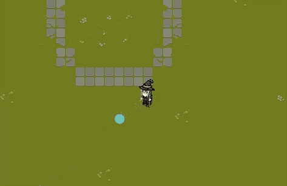
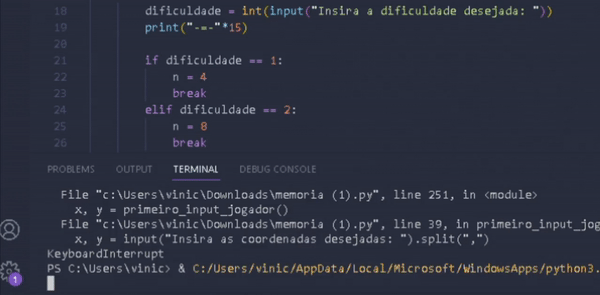
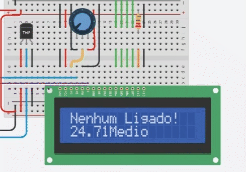

Experiência Criativa ➔ The Curse of the Four
The curse of the Four é um jogo que desenvolvi com minha equipe utilizando do Contruct 2. Nele
o jogador controla Alatar, um mago que busca derrotar bosses a fim de libertar o povo da opreção causada
pelo governo

Raciocínio Algorítmico ➔ Python
Durante o primeiro periodo em Raciocínio Algorítmico, aprendemos lógica de programação usando python,
dentre os diversos projetos que desenvolvemos, o mais desafiador foi o jogo da memória, onde o usuario colocaria
as duas cordenadas da letra, poderia utilizar uma especie de "poder" para revelar o tabuleiro inteiro, e poderia
escolher a dificuldade desejada.

Sistemas Ciberfisicos ➔ Smart City
Durante o semestre, aprendemos sobre sistemas embarcados, hardware, sistemas operacionais e até mesmo redes,
porém o projeto mais complexo que desenvolvemos foi a implementação de uma ideia "Smart City" utilizando arduino.
Fizemos um sistema que liga e desliga o ar condicionado e o aquecedor automaticamente dependendo da temperatura
do ambiente.